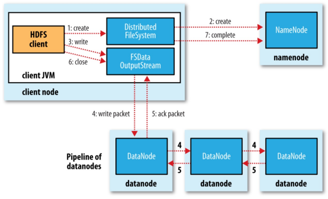
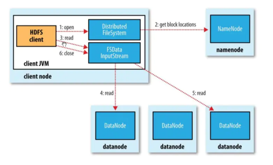

Ch03-Hadoop 之 HDFS 读写流程
March 19, 2018
HDFS 读写过程需要 NameNode，DataNode，Client 等组件共同参与才能完成，所以 HDFS 的读写流程还是比较复杂的。
1. 基本概念 #
在 HDFS 中，文件存储是按照数据块（Block）为单位进行存储的，在读写数据时，DFSOutputStream 使用 Packet 类来封装一个数据包。每个 Packet 包含了若干个 chunk 和对应的 checksum。
- Block: HDFS 上的文件都是分块存储的，即把一个文件物理划分为一个 Block 块存储。Hadoop 2.X/3.X 默认块大小为 128 M，1.X 为 64M。
- Packet: 是 Client 端向 DataNode 或 DataNode 的 Pipline 之间传输数据的基本单位，默认 64 KB
- Chunk: Chunk 是最小的单位，它是 Client 向 DataNode 或 DataNode PipLine 之间进行数据校验的基本单位，默认 512 Byte，因为用作校验，所以每个 Chunk 需要带有 4 Byte 的校验位，实际上每个 Chunk 写入 Packtet 的大小为 516 Byte。
2. 写入流程 #

- 客户端通过分布式文件系统 DistributeFileSystem 向 NameNode 发送上传文件请求，NameNode 收到请求后检查目标文件是否存，父目录是否存在，之后响应客户端可以上传文件。
- 客户端收到响应后向 NameNode 请求上传第一个块信息，并请求返回 DataNode，NameNode 收到请求后根据文件的备份数量返回相应数量的 DataNode 节点。 客户端收到来自 NameNode 返回的节点信息，通过 FSDataOutPutStream 向离客户端最近的节点上传数据，第一个节点收到请求后会继续调用下一个的 DataNode 节点，然后下一个节点去调用自己的下一个节点，直到最后一个节点，将通信管道 PipeLine 建立，然后各个节点从后向前逐级应答客户端。
- 通信管道 PipeLine 建立完成后，客户端先将磁盘中的块信息读到内存，然后通过 FSDataOutPutStream 开始以 Packet 为单位传送块数据，其中 Packet 为 64K 由 Chunk 组成，每个 Chunk 为 512B，并且每个 Chunk 还包含了 4B 的 crc 校验信息，共 516B。当 Packet 被 Chunk 填满以后就将 Packet 放入到应答队列 DataQueue 队列中等待，再从该队列中将 Packet 取出存入另一个队列 ACKQueue 队列中，然后将该 Patcket 发送给离客户端最近的 DataNode。
- 第一个 DataNode 收到数据后，会将该数据传递给下一个 DataNode，每个节点收到数据后都会逐级传递给下个节点直至 PipeLine 中的最后一个节点。并且在传输 Packet 的过程中，每向 DataNode 发送一个 Packet 数据客户端都会等待来自 DataNode 的应答响应，若响应则代表当前节点收来自客户端发送的数据，若没有响应时会将 ACKQueun 中的 Packet 数据重新放回到 DataQueue 队列中等待再次发送，避免了数据丢失。
- 当第一个 Block 块信息传输完成后，客户端会再次请求 NameNode 上传第其他个 Block 块信息。
3. 读取流程 #

- 客户端通过 DistributeFileSystem 向 NameNode 申请下载文件请求，NameNode 收到客户端下载请求后通过 查询文件的元数据找到文件所在的 DataNode，然后返回包含所有该下载文件的 DataNode 给客户端。
- 客户端收到 NameNode 发送回来的 DataNode 信息后，会寻找距当前节点最近的 DataNode 节点请求下载文件。
- DataNode 收到客户端下载请求后开始向客户端发送数据，先将磁盘中的块信息通过输入流读出到内存，然后以 Packet 作为单位校验，传输给客户端。
- 客户端收到 Packet 后先将文件读入到内存然后通过输出流写出到磁盘存储。